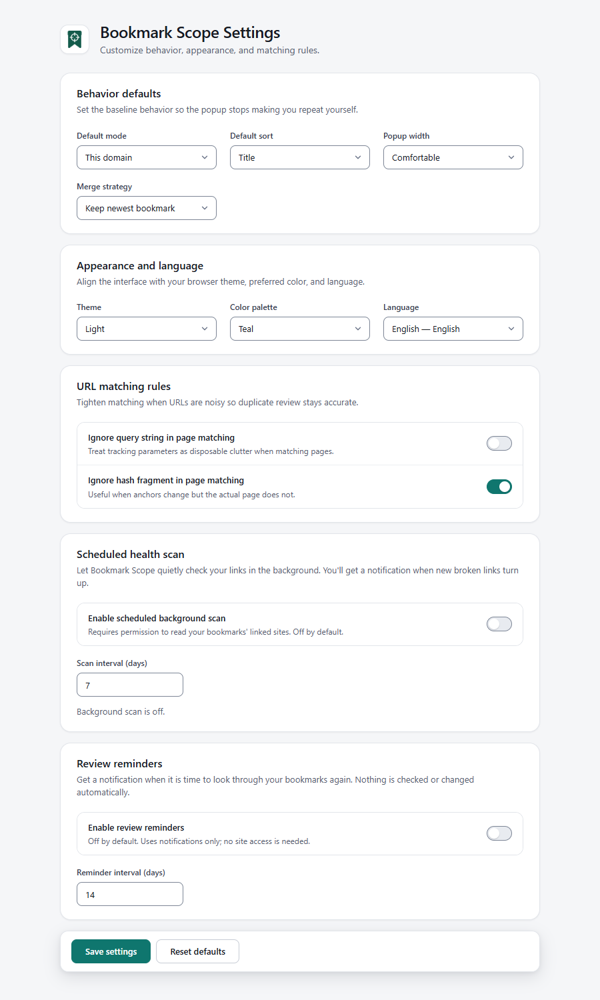
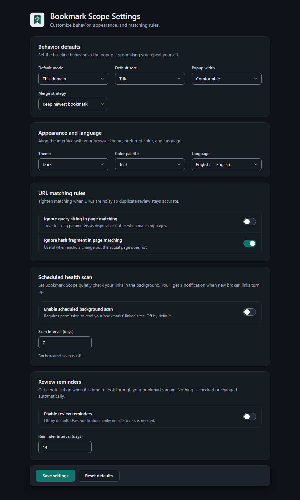

Press Save settings to apply changes. Reset defaults restores the nine preferences marked below, and nothing else.
Behavior defaults#
| Setting | Choices | Default | Effect |
|---|---|---|---|
| Default mode | This page, This host, This domain | This domain | The popup’s starting scope, and the scope the toolbar badge counts. Resets to this on Reset defaults. |
| Default sort | Title, URL, Newest, Oldest, Folder path | Title | The popup’s starting sort order. Folder path is available here only. |
| Popup width | Compact, Comfortable | Comfortable | The popup’s width: Compact is 380 px, Comfortable is 420 px. |
| Merge strategy | Keep newest bookmark, Keep oldest bookmark | Keep newest bookmark | Which copy is pre-selected as the survivor in Duplicate preview. You can still change each group. |
Appearance and language#
| Setting | Choices | Default | Effect |
|---|---|---|---|
| Theme | System, Light, Dark | System | System follows your browser or operating-system colour scheme and updates live. |
| Color palette | Teal, Blue, Indigo, Neutral | Teal | The accent colour of the popup, dashboard and settings. |
| Language | Auto (browser) plus 52 languages | Auto (browser) | Auto uses your browser language when supported and falls back to English. See Appearance, themes and languages. |
URL matching rules
| Setting | Default | Effect |
|---|---|---|
| Ignore query string in page matching | Off | When on, ?utm_source=x and other query strings do not make two pages different. Affects duplicate detection, Page scope, the badge and link-health keys. |
| Ignore hash fragment in page matching | On | When on, #section does not make two pages different. |
Examples are in Finding and searching. Changing these options changes which bookmarks count as duplicates immediately, so review before you delete.
Scheduled health scan
| Setting | Default | Range | Effect |
|---|---|---|---|
| Enable scheduled background scan | Off | On / off | Checks links in the background and notifies you about newly broken ones. Turning it on asks for site access; if you decline, it stays off and the page says Background scan needs site-access permission. It was not enabled. |
| Scan interval (days) | 7 | 1–90 | Time between runs. A value outside the range is corrected when you save. |
A status line shows Background scan is off., Background scan is on. First scan will run shortly. or Last scan: …. N bookmarks currently look broken. How it works: Link health.
Note that Reset defaults does not change this section.
Review reminders
| Setting | Default | Range | Effect |
|---|---|---|---|
| Enable review reminders | Off | On / off | Shows a review is due notification on a schedule. Notifications only; no site access is needed. |
| Reminder interval (days) | 14 | 1–365 | Time between reminders. How the schedule moves is explained in Review reminders. |
Reset defaults does not change this section either.
Settings that are not on this page#
These are remembered automatically as you use the product, each by the screen you change it on:
| Preference | Where you change it | Default |
|---|---|---|
| Popup scope (Page / Host / Domain) | Popup | From Default mode |
| Popup sort | Popup → More controls | From Default sort |
| Theme and colour palette | Popup or dashboard menus, or Settings | System, Teal |
| Dashboard filter chip | Dashboard | All |
| Grouping and group order | Dashboard toolbar | Flat view, Default order |
| Side panel collapsed | Dashboard side rail | Collapsed |
| Dashboard sort | Dashboard toolbar (Sort visible bookmarks) | Title A–Z. Independent of the popup sort |
| Density (compact) | Dashboard toolbar | Normal. Not saved between visits |
| Quick-setup card dismissed | Got it on the card | Shown on first run |
Where settings are stored#
Everything above is stored in this browser profile’s extension storage (storage.local), not synced across devices. Privacy, permissions and data lists every kind of data.